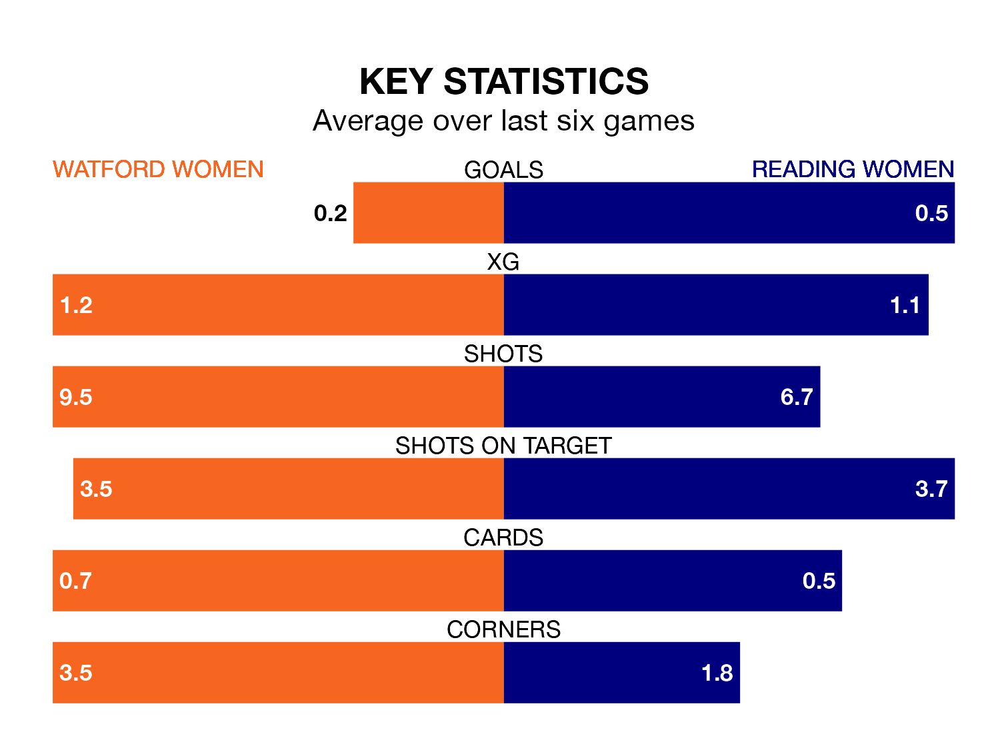

Struggling Watford Women face Reading Women at Grosvenor Vale on Sunday looking to build on a win in their last league outing.
After securing all three points with a 0-1 victory over Blackburn Rovers Women on April 20, Watford sit bottom of the FA Women's Championship.
They travel to play a Reading side ninth in the standings, who also won their last match, 1-0 against Durham Women, on April 21.
Watford are in awful form in the FA Women's Championship, with no wins and six losses from their last six games.
With a win and a draw over that period, Reading's form is better – they have taken four points from 18, compared to the hosts' zero.
In Carly Johns, Watford have one of the league's most on-form strikers so far this season. She has notched seven goals in 21 appearances, to sit seventh in the scoring charts.
The Royals's top scorers, with two goals each, are Charlie Wellings, Freya Gregory, Madison Perry, Tia Primmer and Lauren Wade.
With 18 goals in 21 games so far this season, the away side are the league's lowest scorers with 0.9 goals per game. And they are conceding more than average, letting in 37 goals at a rate of 1.8 per game.
Watford are also below average scorers, with 0.9 goals per game, compared to a league average of 1.4. They have conceded 2.0 goals per game.
Updated: 07:59 (UTC), 26/04/24